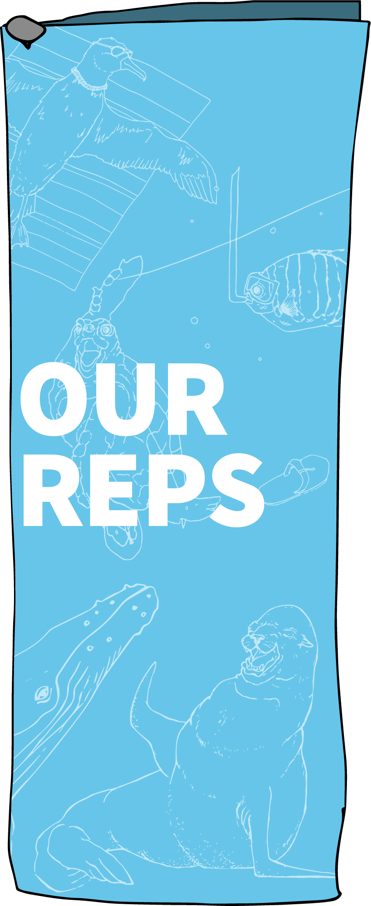

×
If you would like to learn more about the process of designing and developing Happy Ocean, please visit my
×

INFORMATION & RESOURCES
close
Statistics + Infographics
- Marine Plastics
- NOAA (A Guide to Plastic in the Ocean)
- Marine Debris (fact sheet)
- What Happens to the Plastic We Throw Out
- Decomposition Rates of Trash in the Ocean
- Types and Sources of Plastic
- Visualizing How Ocean Currents Help Create the Garbage Patches
- Map of Ocean Plastic
- Plastics in the Ocean: Fact Sheet
- Planet or Plastic? (National Geographic)
- Plane Search Shows World's Oceans Are Full of Trash
- Plastics in the Ocean Affecting Human Health
- The Great Pacific Garbage Patch Isn't What you Think It Is
- Ocean Plastic Pollution: A World Threat
Microplastics
- 5 Types of Microplastics
- Freshwater Microplastics
- Microplastics and Drinking Water
- Microplastics in the Marine Environment
- Fate and Impact of Microplastics in Marine Ecosystems
- We Know Plastic Is Harming Marine Life. What About Us?
- From Fish to Honey: Nothing Is Safe from Microplastics
- Earth Has a Hidden Plastic Problem (3-Part Series)
Single-Use Plastics
- Plastic Free Challenge
- Earth Day (fact sheet)
- UN Environment (report)
- Plastic Oceans
- Center for Biological Diversity
- This Is Plastics (The Purpose of Single-Use Plastics)
Ocean Cleanup Initiatives
- 4Ocean
- The Ocean Cleanup
- #2MinuteBeachClean
- Sea Legacy
- Plastic Pollution Coalition
- The Last Plastic Straw
- Break Free from Plastic
- 5 Gyres
- Oceanworks
- Oceana
- Save Our Shores
- With Millions of Tons of Plastic in Oceans, More Scientists Studying Impact
close
Reduce
- No. More. Plastic.
- Adverse Health Effects of Plastics
- 16 Simple Ways to Reduce Plastic Waste
- Ways to Help
- 10 Ways to Adopt a Zero Waste Lifestyle
- Tips to Use Less Plastic
- Ten Tips to Reduce Your Plastic Footprint
- 11 Easy Ways to Reduce Your Plastic Waste Today
- 100 Steps to a Plastic-Free Life
- Reduce Your Plastic Waste
- Could These Balls Help Reduce Plastic Pollution?
Reuse
- TerraCycle - Reuse
- 20 Ways to Reuse and Recycle Plastic Bottles
- 20 Innovative Ways to Reuse Old Plastic Bottles
- 8 Ways and Whys to Reuse Plastic
- 39 Unexpected Ways to Reuse Plastic Bags
- Our Plastic Footprint: Reuse to Take the Pressure Off Recycling
- The Effective Reuse and Applications for Mixed Plastic Waste
- Reuse Plastic Bottles (Instructables)
Recycle
- Terracycle - Recycle
- Monofilament Recycling
- Wow, You Can Recycle That?
- Are Plastic Straws Recyclable?
- Recycling Center Search and Recycling Guides
- Top 10 Most Important Items to Recycle
- 19 Things You Can Recycle That Will Surprise You
close
Humpback Whale
- Humpback Whale Species Guide
- Not Whale Food
- Is Ocean Garbage Killing Whales?
- Pollution: Whales and Dolphins
- Whales and Sharks Are the New Victims of Our Plastic Waste
- Microplastic in a Macro Feeder
Laysan Albatross
- Laysan Albatross' Plastic Problem
- The Amazing Albatrosses
- Laysan Albatross Fact Sheet
- Plastic Trash Threatens Remote Seabirds
- The Oceans Are Full of Plastic, But Why Do Seabirds Eat It?
- Nearly Every Seabird on Earth Is Eating Plastic
California Sea Lion
- California Sea Lion
- Sea Lion (San Diego Zoo)
- Facts about Sea Lions
- How Plastic Pollution Is Affecting Seals and Other Marine Life
- Plastic Packing Bands Are Strangling Seals and Sea Lions
Green Sea Turtle
- Green Sea Turtle (Fact Guide for Kids)
- Green Sea Turtles (SeeTurtles)
- Rare Sea Turtles Eating Plastic at Record Rate
- Climate Change Turns Green Sea Turtle Eggs Female
- Green Sea Turtle (WWF)
Panamic Sergeant Major
- Panamic Sergeant Major Fish
- Sergeant Major Fish (Discover Fishes)
- Microplastic Toxins Leave Shellfish at Mercy of Predators
- High Levels of Microplastics Found in Northwest Atlantic Fish
- Microplastics in Fish
- From Fish to Humans: A Microplastic Invasion May Be Taking a Toll
- Ocean Life Eats Tons of Plastic
General Information: Marine Animals and Plastic
- Animals Eat Ocean Plastic Because It Smells Like Food
- These 5 Marine Animals Are Dying Because of Our Plastic Trash
- Ocean Plastics and Marine Animals
- Ocean Plastics Pollution
- For Animals, Plastic Is Turning the Ocean Into a Minefield